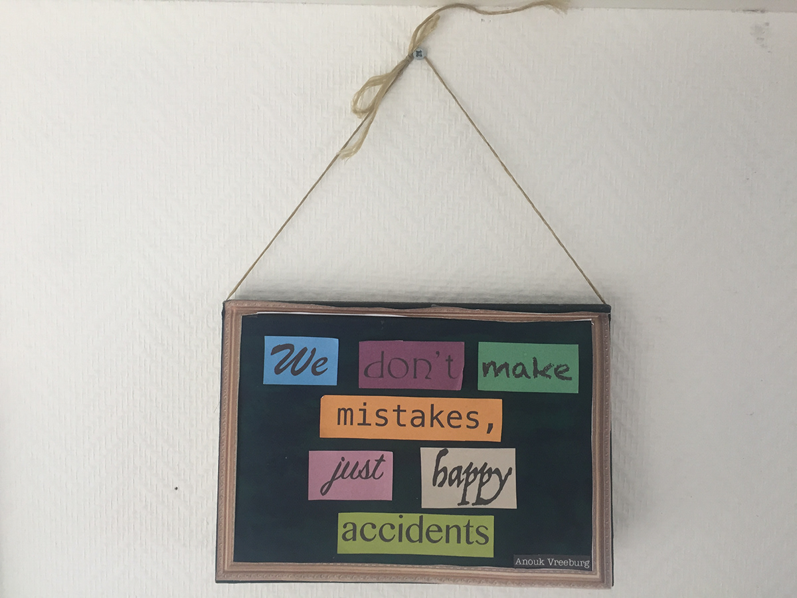
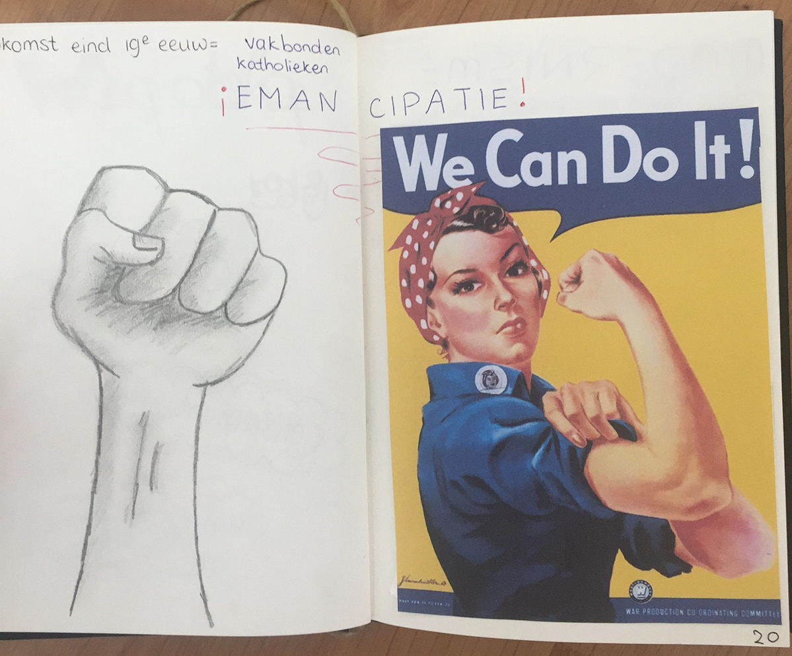
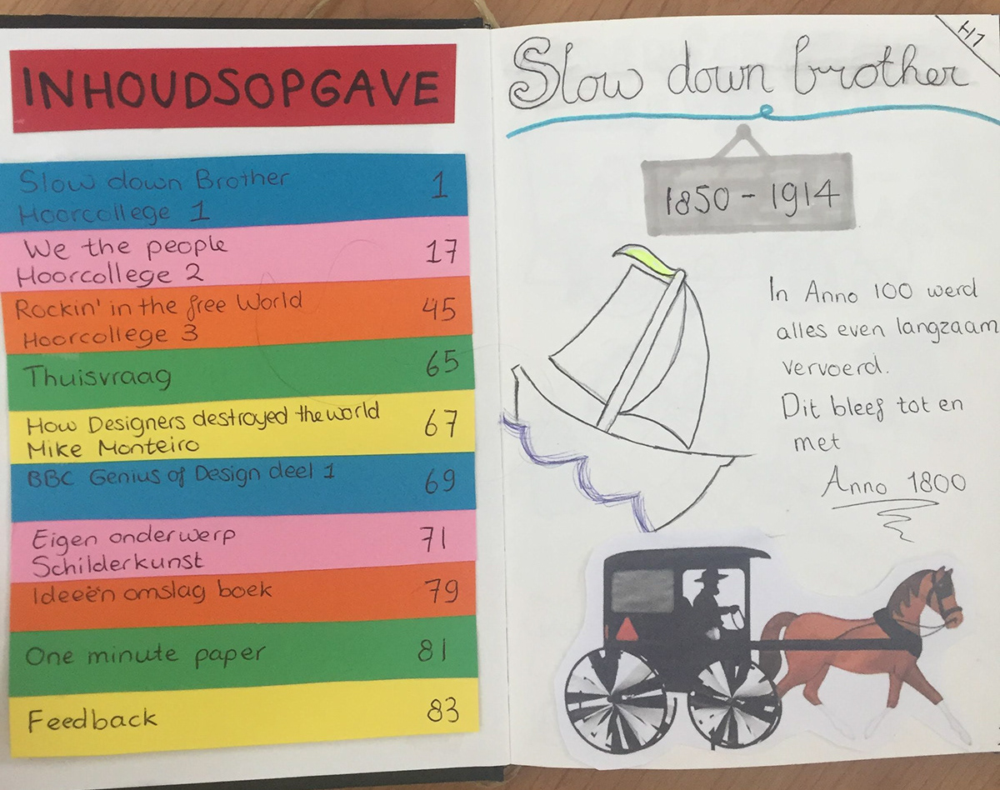
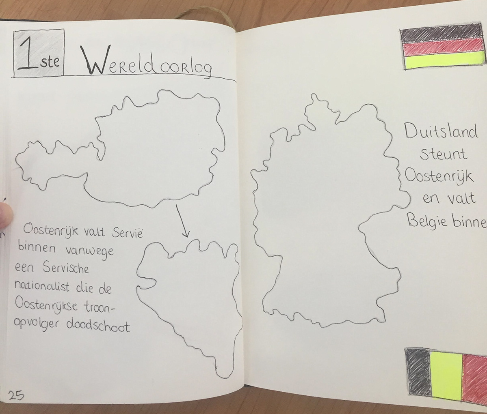
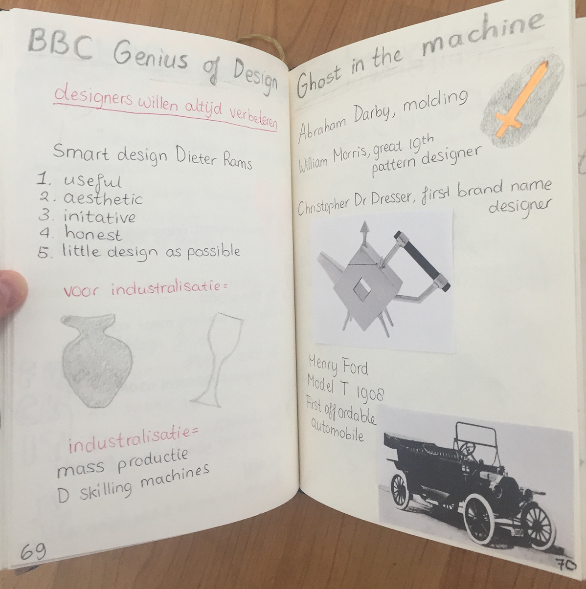
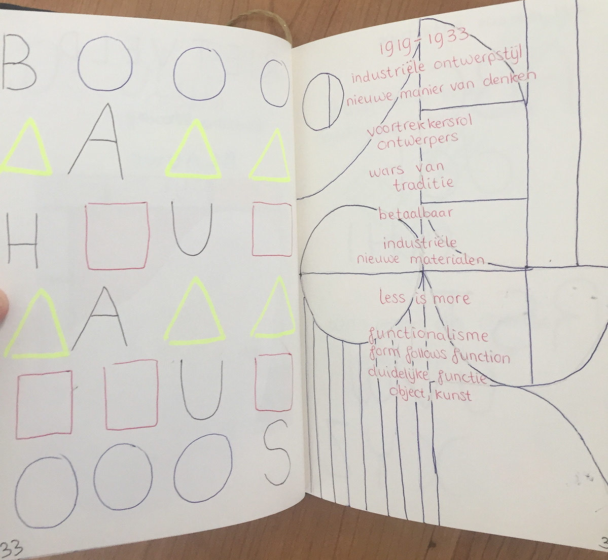
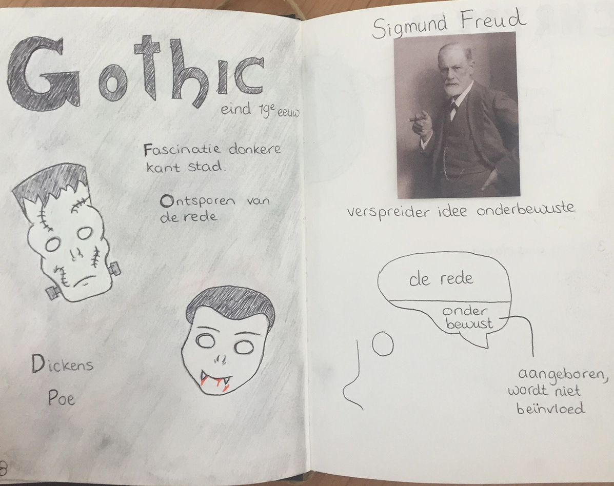
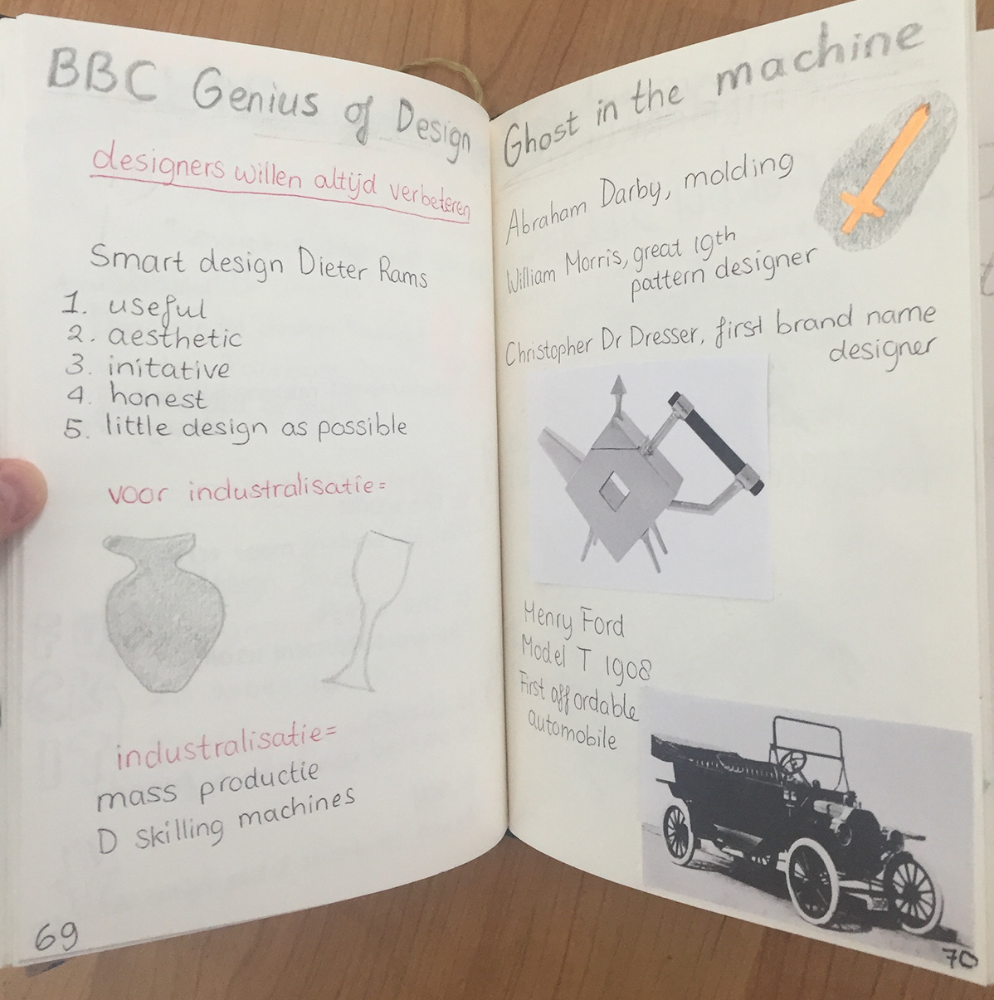
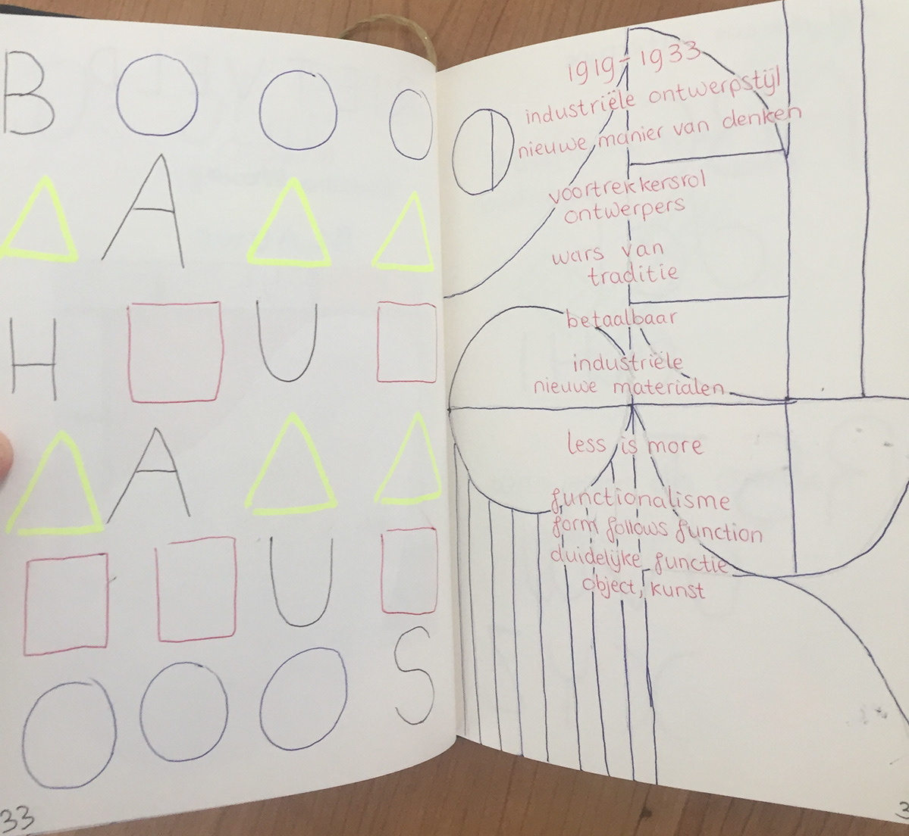
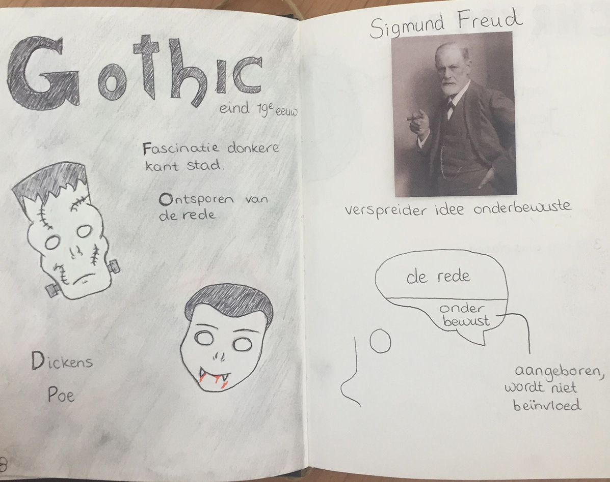

Assignment year 1: For the subject Design History I had to learn and show the history of art design. I got an empty note book that I needed to fill to learn and understand more about the giving subject. Beside the history, this really taught me how to sketchnote. Drawing information down is a great way to make points across and to keep the reader more interested. I am glad that I learned this technique.
   
 




